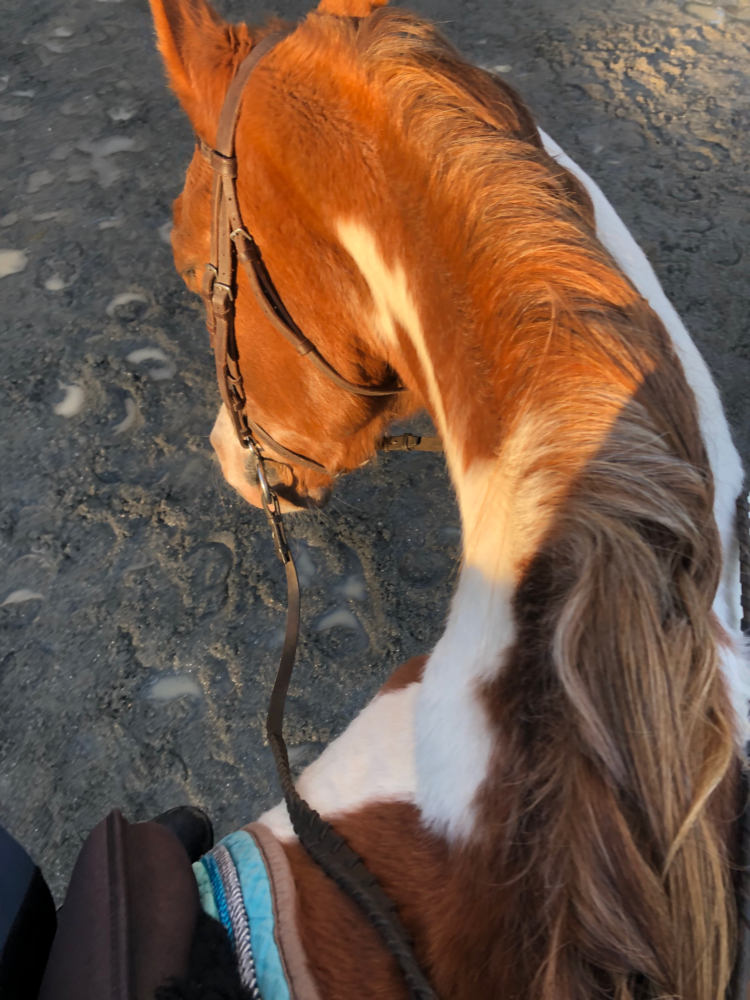
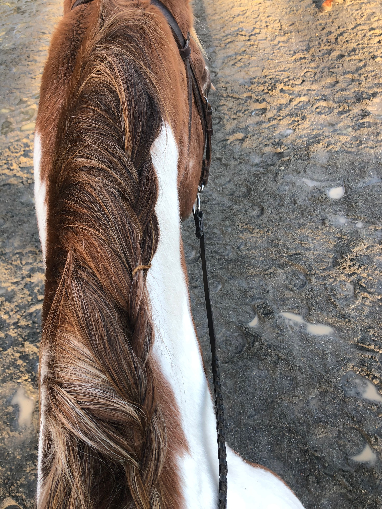
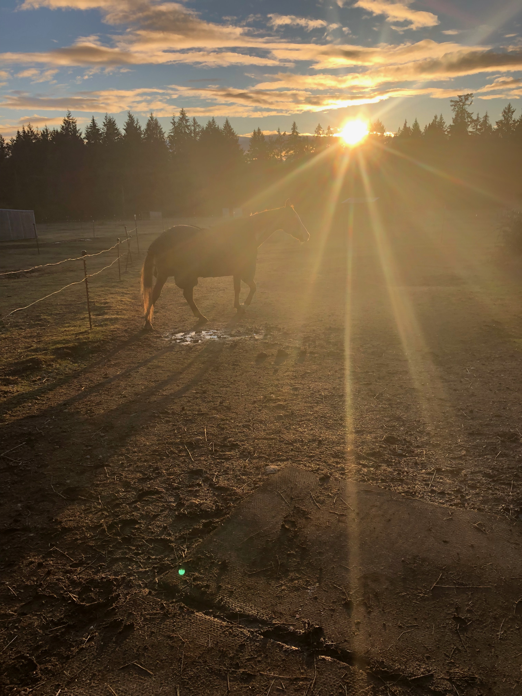
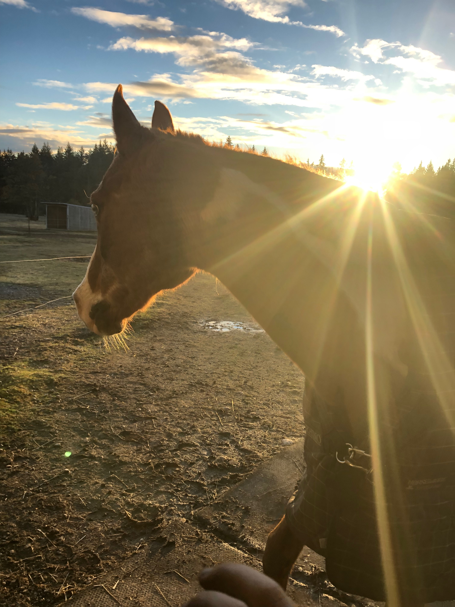
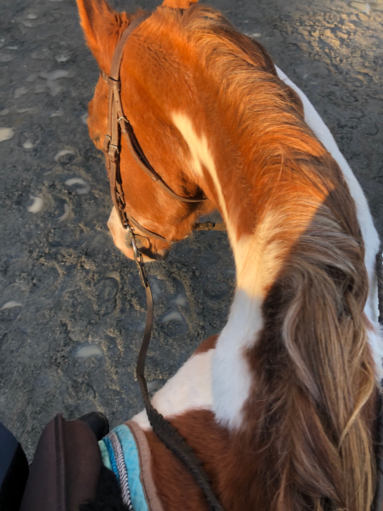
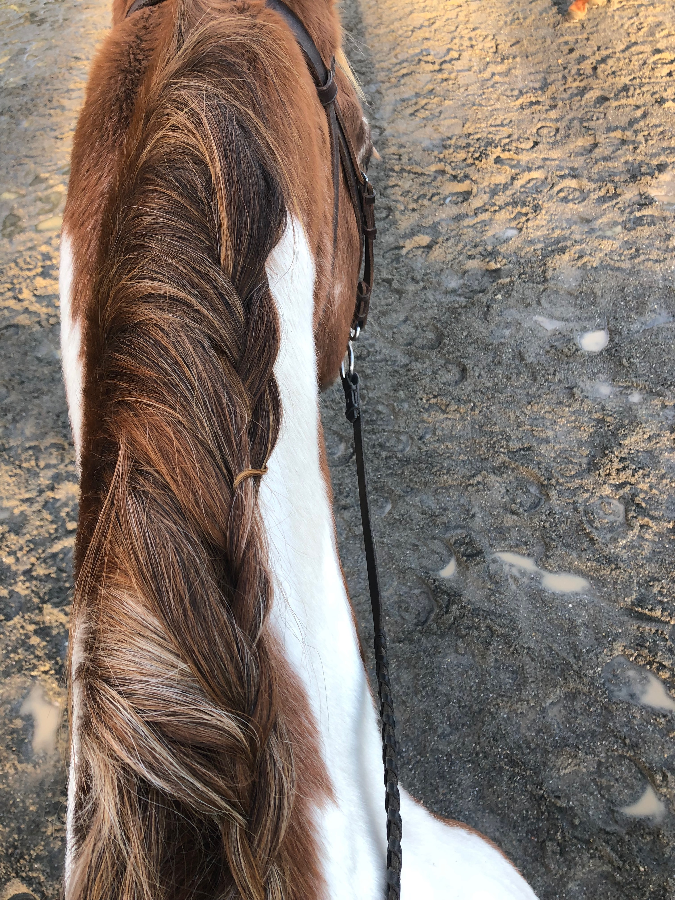
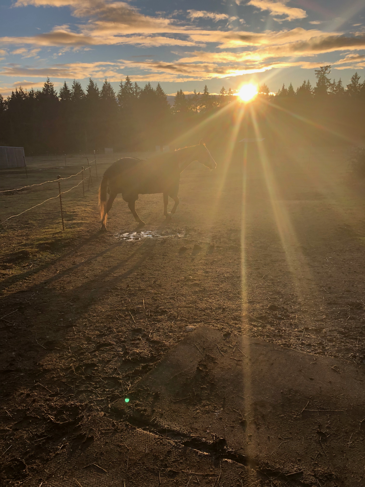
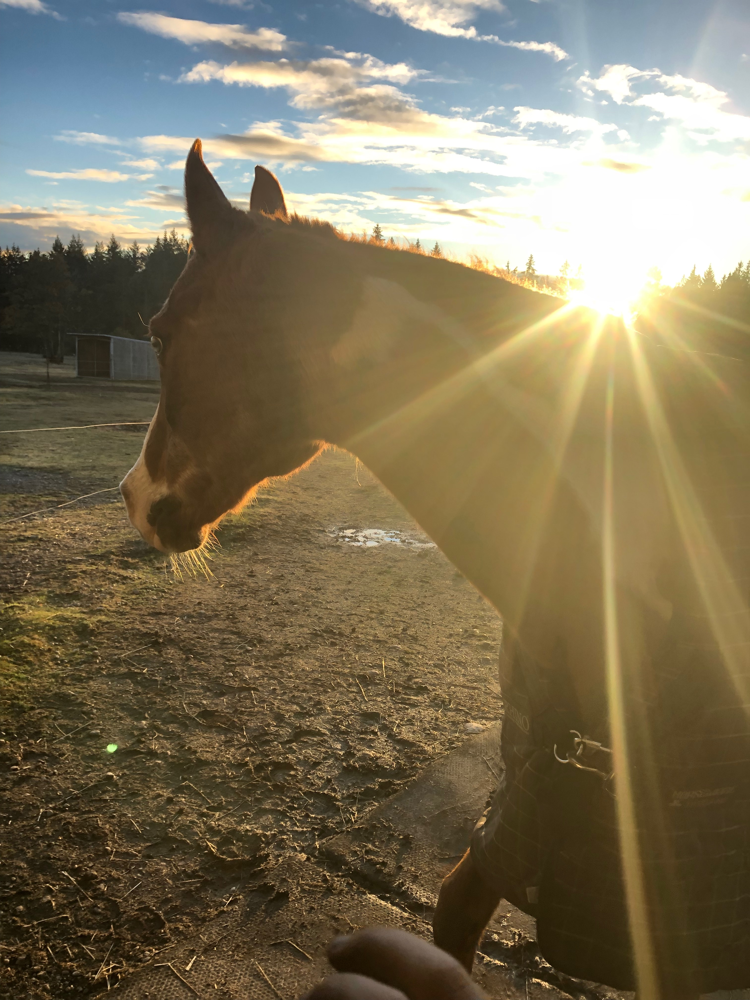

Land and Barn
What to put inside the barn and around the property
Horse needs
Horse
Your needs
Daily Schedule for horse and you!
- Feed horses hay and/or grain morning and night.
- Clean and refill water buckets morning and night.
- Muck out stalls morning and night.
- Replace fresh bedding if you have stalls and not 24 / 7 turnout.
- Spray horse with fly spray or insect repellant morning and evening during summer months.
- Ride your horse at least 3 days a week!
- Wash saddle pads weekly.
- Teach your horse to be patient when being turned loose.
- Clean out stall and pasture twice a day. Do daily horse stretches before you put on the saddle.
- https://www.mossyoakfences.com/fence-design-styles/horse-fence/wood-horse-fence/
Horse name ideas
Ways to make money!
Important links!
Tips!

 






